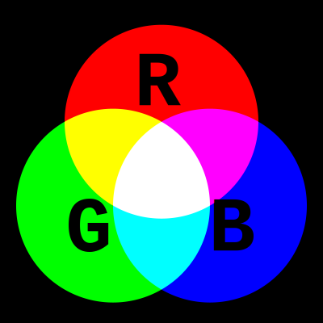

💡 How to resolve the colors in a negative afterimage
To find which colors are seen in a negative afterimage you use the additive color model. The colors seen are
simply the
complementary colors. This is because fixating lessens the response of the associated photoreceptors and we
end-up seeing a
mix of the colors detected by the two other photoreceptors. This
effect is usually prevented by micro-saccades.

Give the afterimage colors seen for each image.
Question 1: Negative afterimage colors for a green cross on a red background
Answer
Afterimage cross color: #ff00ff
Afterimage background color: #00ffff
Question 2: Negative afterimage colors for a magenta cross on a cyan background
Answer
Afterimage cross color: #00ff00
Afterimage background color: #ff0000
Question 3: Negative afterimage colors for a yellow cross on a blue background
Answer
Afterimage cross color: #0000ff
Afterimage background color: #ffff00
Question 4: Negative afterimage colors for a blue cross on a yellow background